In prep
How development forecasts the future: the evolution of anticipatory plasticity Review
PhD Student · Pfennig Lab · UNC Chapel Hill
Evolutionary biologist from West Palm Beach, Florida. I study how organisms use developmental information to anticipate the conditions they will face, and how that shapes what they become.
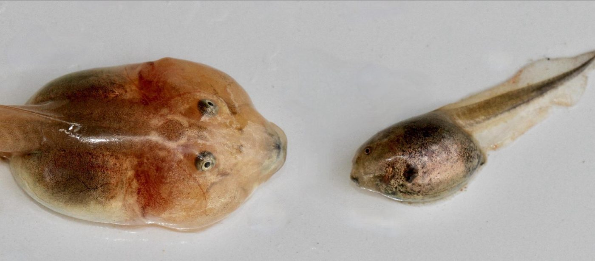
01 / Research
Spadefoot toads breed in desert rain pools that can dry within weeks. From a single clutch, siblings can develop into algae-scraping omnivores or shrimp-eating carnivores with enlarged jaw muscles, a notched beak and a short gut.
I work across phenotypic plasticity, resource polyphenisms and biomechanics to ask how development reads the environment, sometimes before hatching, and how feeding performance shapes selection on the forms that result.
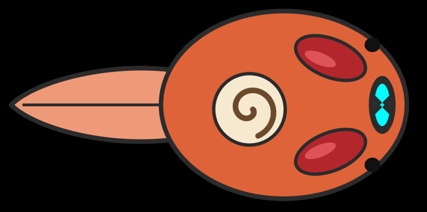
Embryos exposed to fairy shrimp cues hatched faster than controls. I'm testing whether developing tadpoles use early cues to prepare for the pond they will hatch into, and reviewing how anticipatory plasticity evolves.
F1–F4 cue experiments · SWRS 2026
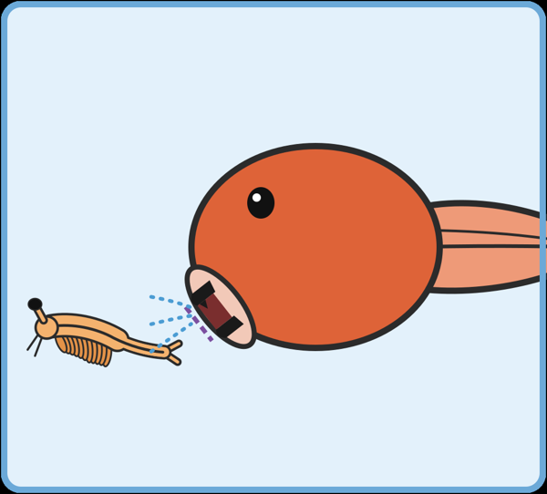
Why are intermediate tadpoles less fit? Using high-speed video of suction strikes on fairy shrimp and scraping bouts on algae, I'm testing whether intermediates are worse than each specialist at that specialist's job.
149 tadpoles · 1000+ fps · lateral + ventral views · DLTdv8 · microCT (UNC BRIC)
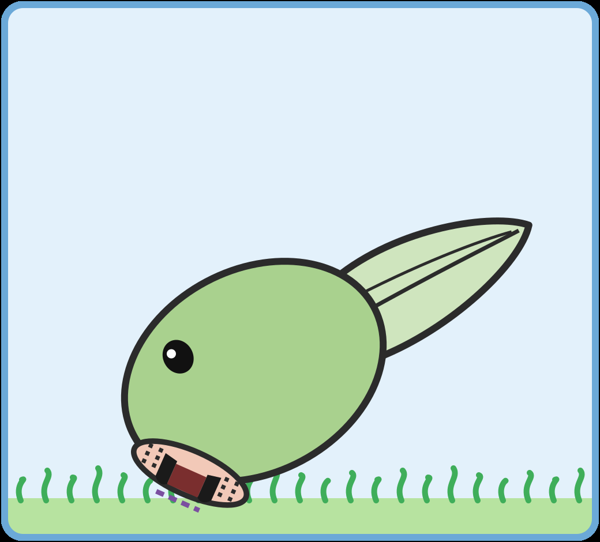
With Sheila Patek, I'm asking how fairy shrimp evolve alongside carnivore presence and pond ephemerality, and whether predator and prey shape each other's anticipatory responses.
Collaboration · Duke University
Before UNC
Boston College
2022–2024
With Prof. Christopher Kenaley, I asked how jaw morphology in sunfishes and their relatives translates into feeding performance. I dissected the A1, A3 and Aω jaw-muscle divisions in specimens from the Harvard Museum of Comparative Zoology, modeled jaw closing with the R package JawCloseR, and used suction-index residuals to predict feeding mode. The results did not always match what morphology alone predicts.
02 / Publications
03 / Talks & posters
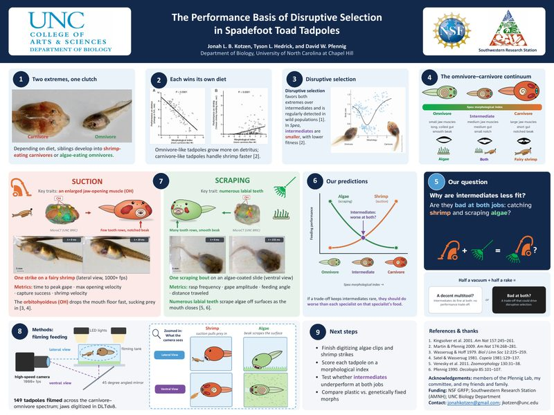
Kotzen, Hedrick & Pfennig · Regional SICB meeting, UNC Chapel Hill, November 2026
Half a vacuum plus half a rake: are intermediate tadpoles a decent multitool, or bad at both jobs?
View full poster04 / CV
05 / Press
06 / Photos
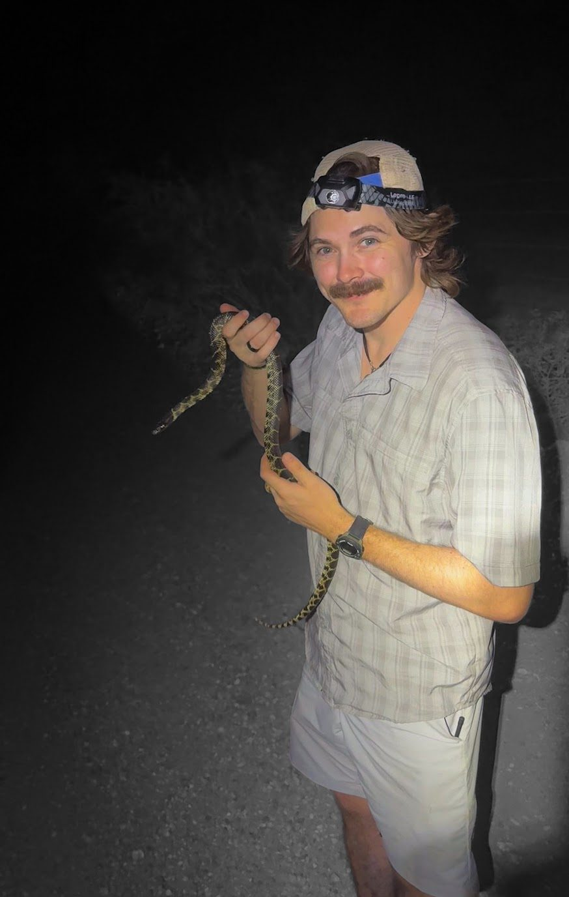
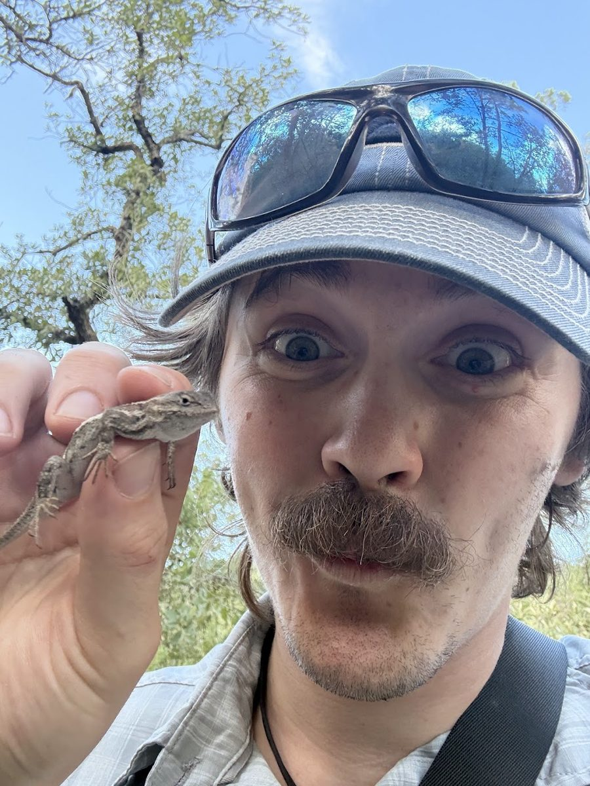
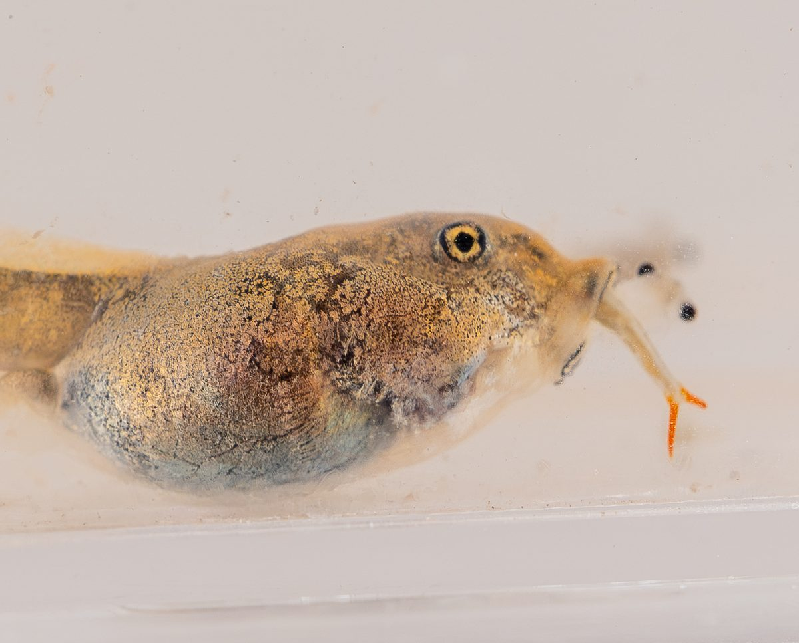
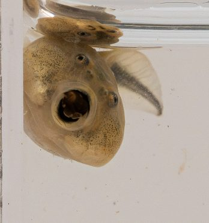
07 / Videos
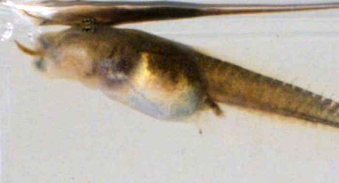
t = 0 ms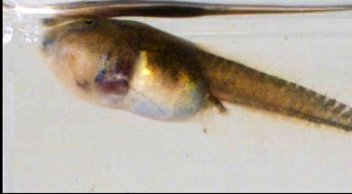
t = 19 msA carnivore takes a fairy shrimp in under 20 milliseconds. Lateral view, 1000+ fps.
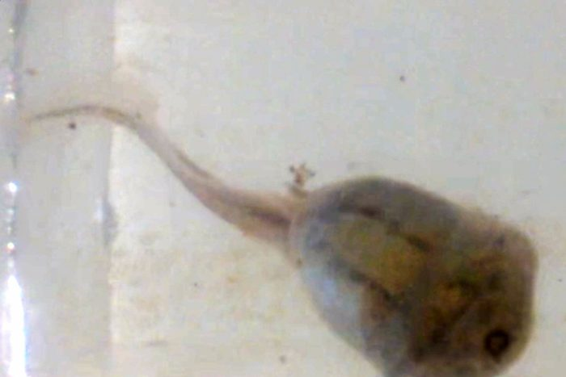
t = 0 ms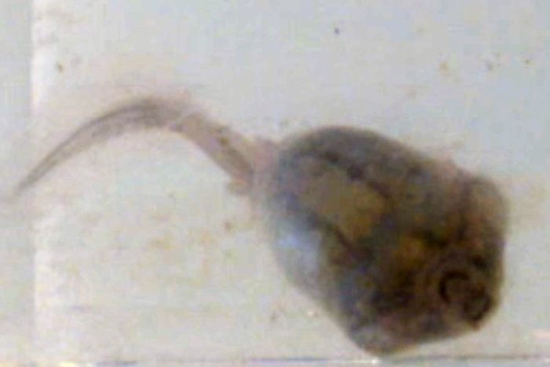
t = 155 msAn omnivore rasps algae off a slide with rows of labial teeth. Ventral view.
Spadefoot embryos developing alongside live shrimp, the cue in my anticipatory plasticity experiments.
08 / Off the clock